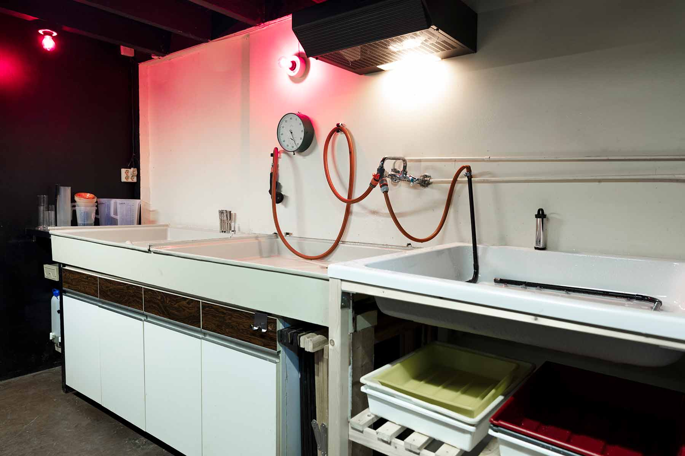

Professionele doka voor analoge fotografie
Bij Studio Rik Versteeg huur je een volledig uitgeruste donkere kamer in Rotterdam, perfect voor fotografen die hun eigen zwart-wit film willen ontwikkelen en afdrukken.
Alles staat voor je klaar
Deze professionele doka is ingericht voor zowel beginners als ervaren makers die willen werken met analoge fotografie technieken.
De ruimte is uitgerust met een hoogwaardige Durst M605 vergroter met 75mm lens, waarmee je haarscherpe prints maakt. Alles wat je nodig hebt – van chemicaliën tot ontwikkelschalen en veilig licht – is inbegrepen in de huurprijs. Zo kun je je volledig focussen op het creatieve proces, van negatief tot eindprint.
Wil je zelf je film ontwikkelen of hoogwaardige zwart-wit prints maken in een rustige en professionele omgeving? Boek dan nu jouw doka sessie in Rotterdam en breng je analoge werk tot leven.

Introductie & begeleiding
Voorafgaand aan je sessie krijg je een korte introductie in de donkere kamer. We helpen je graag op weg met:
- Werken met de Durst vergroter en ingebouwde contrasten
- Uitleg over de timer
De chemicaliën zullen wij voor je klaar zetten waardoor je geen tijd verliest en meteen kan beginnen met printen. Na deze uitleg werk je zelfstandig. Tijdens je sessie is er altijd ondersteuning beschikbaar als je vragen hebt of hulp nodig hebt.
Specificaties van de doka
- Professionele Durst M605 vergroter met instelbare grijswaarden
- 75mm lens (f/4 – f/22) voor scherpe en gedetailleerde afdrukken
- Droogkast: jouw ontwikkelde film droog in ±30 minuten
- Afdrukken mogelijk tot 50 x 50 cm (op aanvraag, aangepaste setup nodig)
- Ontwikkelschalen in meerdere formaten inbegrepen
- Film retriever voor 35mm film
- Ontwikkeltanks voor 35mm en 120 film
Inclusief
- Chemicaliën (goed voor ±10 A4 prints, exclusief teststrips)
- Basis begeleiding omtrent de apparatuur
Exclusief
- Fotopapier (verkrijgbaar bij FotoFilmFabriek)
- Alleen geschikt voor zwart-wit fotografie (geen kleurontwikkeling)
- Extra chemicaliën gebruik: €10 per 10 afdrukken
- Intensieve begeleiding omtrent tegenhouden, doordrukken, contrast en werken met Bariet papier (extra bij te boeken voor €30,00)